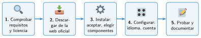

Instalar aplicaciones y licencias
Criterios: 2a, 2b, 2c, 2d, 2g, 2h
🤔 Pienso10 min
Qué hago aquí: Piensa un momento y contesta con lo que ya sabes. No pasa nada si no lo sabes: es para empezar.
¿Qué aplicaciones necesita una administrativa en su ordenador? Haz una lista.
📖 Leo y aprendo40 min
Qué hago aquí: Lee despacio, mira los dibujos y los ejemplos, y quédate con la idea clave del final.
Las aplicaciones ofimáticas son los programas de oficina: procesador de textos (Word), hoja de cálculo (Excel), presentaciones (PowerPoint), base de datos (Access) y correo y agenda (Outlook). Juntos forman una suite, como Microsoft 365, LibreOffice o Google Workspace.
Antes de instalar, comprueba los requisitos: los mínimos son lo justo para que funcione; los recomendados (u óptimos), para que funcione bien. Se miran en la web del fabricante: sistema operativo, procesador, RAM, espacio en disco, pantalla y conexión.

Las aplicaciones se actualizan para corregir errores y fallos de seguridad (en Windows: Configuración › Windows Update; en Microsoft 365: Archivo › Cuenta › Opciones de actualización). Para quitar un programa: Configuración › Aplicaciones › Aplicaciones instaladas › Desinstalar. En Microsoft 365 también puedes añadir o quitar componentes (por ejemplo, no instalar Access).
✏️ Hago160 min
Qué hago aquí: Haz las actividades en orden. Empieza siempre por las básicas.
Busca en la web de Microsoft los requisitos de Microsoft 365 para Windows (procesador, RAM, disco y sistema operativo). ¿Los cumple tu ordenador del aula?
Une cada programa con su tipo de licencia: Microsoft 365, LibreOffice, Adobe Reader, WinRAR (prueba), GIMP, Windows de un portátil nuevo.
Instala (o simula con capturas) una aplicación gratuita útil en una oficina, como un lector de PDF o un compresor. Anota cada paso en una ficha de instalación: programa, versión, origen, requisitos, fecha, opciones elegidas e incidencias.
Comprueba si hay actualizaciones de Windows y de Office en tu equipo. ¿Cuándo fue la última? ¿Por qué son importantes?
Desinstala la aplicación de la actividad 1.5.3 (o explica cómo lo harías) y completa la ficha con «baja». ¿Qué archivos pueden quedar en el equipo? (criterio 2g)
Tu empresa quiere ahorrar y propone instalar Word «pirata». Escribe un correo breve explicando los riesgos legales y de seguridad, y dos alternativas legales.
🚀 Amplío (si quieres saber más)
Qué hago aquí: ¿Has terminado? Lee la curiosidad o elige el reto. Es voluntario.
Compara Microsoft 365 y LibreOffice: precio, licencia, programas que incluye y compatibilidad con los archivos. ¿Cuál recomendarías a una pequeña empresa?
✅ Compruebo10 min
Qué hago aquí: Contesta sin mirar la ficha y marca cómo lo llevas.